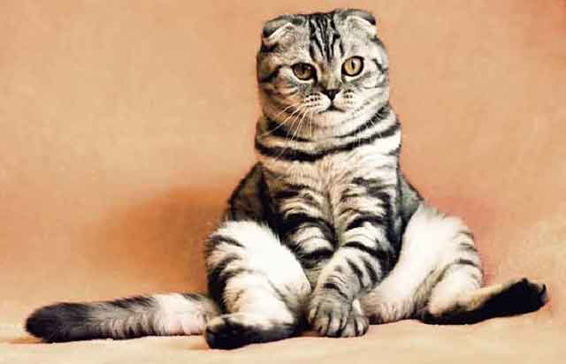

고양이가 배를 보일 때!
고양이의 배는 다른 신체 부위가 털로 감싸져 있는 것과 달리 연한 살이 드러나 있습니다. 그래서 자신의 신체 부위 중에서도 배가 가장 약하다고 생각합니다. 당연히 그 부위를 만지는 것도 싫어합니다. 약한 부분이 노출됐다고 생각할 테니까요. 그런데 어느 날 고양이가 배를 완전히 보이며 누워있거나 몸부림치는 모습을 볼 수 있습니다. 이럴 때 궁금증이 생기겠죠! 고양이가 배를 보일 때는 과연 무슨 의미일까요? 함께 알아보겠습니다!
"집사를 향한 믿음과 신뢰"
우선, 고양이가 배를 보이는 행동을 하는 이유는 여러 가지가 있습니다. 그중에서도 가장 큰 이유는 '믿음'에 대한 이유가 가장 크겠죠. 고양이가 자신의 신체 부위 중 가장 연약한 곳을 보여줄 정도라면 믿고 의지한다는 의미로 해석할 수 있을 것 같습니다. 단, 배를 보인다고 해서 '쓰다듬어' 달라는 이유기는 아닙니다. 그래서 귀여운 모습을 보인다고 해서 갑자기 배를 만지려고 하는 것은 좋지 못합니다.
"장소에 대한 편안함"
마찬가지로 집사 앞에서 배를 까고 발라당 눕는 행위는 집사에 대한 신뢰를 말하면서 동시에 잠을 잔다면 장소에 대한 안정감도 생각할 수 있습니다. 자신이 푹 쉬는 공간이자 보고받고 있는 공간이라고 생각하는 것이죠. 환경에 대한 만족도가 높아 고양이가 스트레스를 덜 받을 가능성이 큽니다. 이럴 때도 마찬가지로 가볍게 턱을 만져주는 행동 이외에는 만지지 않는 것이 좋습니다.
"관심이 필요할 때"
가만히 있는 집사를 향해 배를 보이는 '구애'와 같은 의미입니다. 배를 보이는 행동은 집사를 믿고 의지한다는 의미로 같이 놀아주는 시간을 늘려준다면 고양이의 스트레스를 해소하는 것은 물론 관심까지 채워줄 수 있습니다. 한동안 스트레스가 쌓인 고양이의 신호가 될 수 있으므로 될 수 있으면 놀아주고, 자주 놀아준다면 끈끈한 유대감이 생길 수도 있겠죠?
"실내 온도의 답답함"
실내 온도가 높거나 답답하다고 느낄 때, 체온 조절을 위해서 배를 보일 수 있습니다. 덥다고 느낄 때 빠르게 체온을 떨어뜨리는 방법이라고 생각하는 거죠. 특히, 여름철 이런 모습을 자주 보입니다. 고양이가 생각하는 최적 온도는 27~29도 정도입니다. 그보다 높은 온도는 견디기 힘들어할 수 있으므로 실내 온도 조절도 중요합니다!
고양이가 배를 보이는 이유는 다양합니다. 그 다양한 이유를 빠르게 판단해 원하는 것을 들어주는 게 포인트! 동글동글한 외모로 귀엽게 배를 보이며 애교를 보인다면, 집사에게 원하는 것이 있는 건 아닌지도 확인해야겠죠? 주의해야 할 점은 배를 만지지 말아야 한다는 점! 고양이에게 약점인 부위보다는 고양이가 좋아하는 부위를 중심으로 만지며, 신체접촉을 늘려가는 것도 좋습니다!
[출처] 고양이가 배를 보일 때! ｜ 작성자 꽁치마루